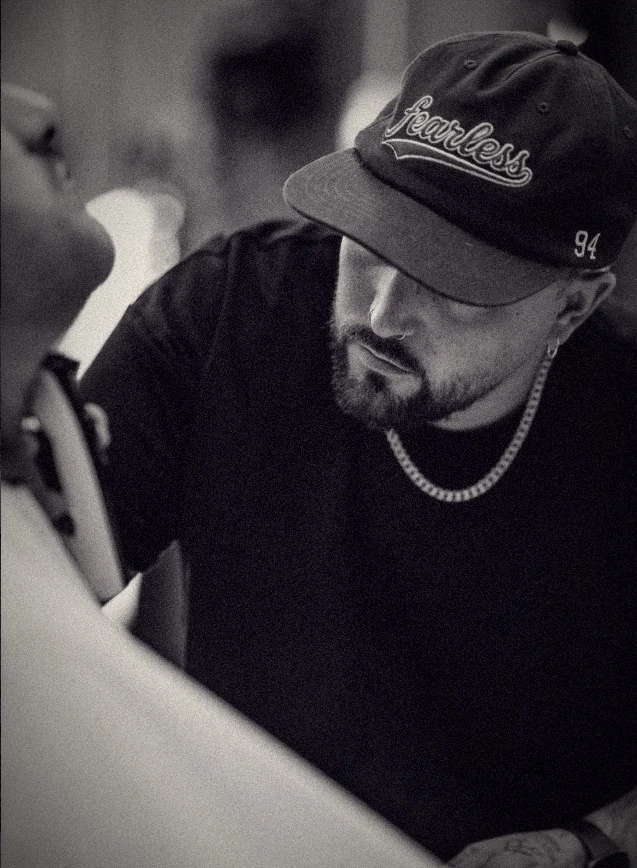
Cuatro amigos. Una habitación en su casa. Unas tijeras.
Años de trabajo. Mucho sacrificio.
Hoy
Referente
del sector.
Empezó cortando el pelo a cuatro amigos, en su propia casa. Sin escuela, sin nombre, solo ganas de hacerlo bien.
Años de trabajo y mucho sacrificio después, su salón es un punto importante de referencia en el sector. Realiza formaciones, y acude como jurado a concursos de alto prestigio en el sector.
Y sigue, cada día, cortando él mismo.
Cada corte,
una firma.
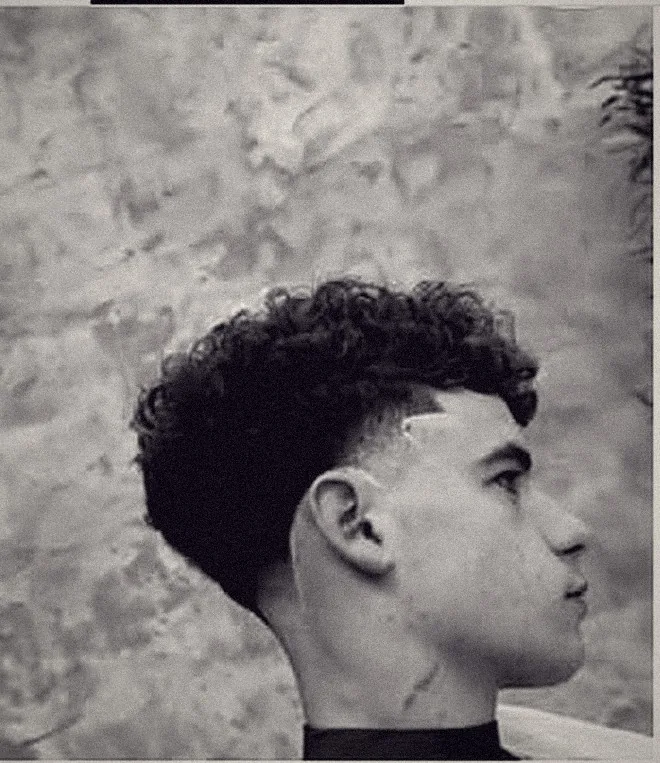
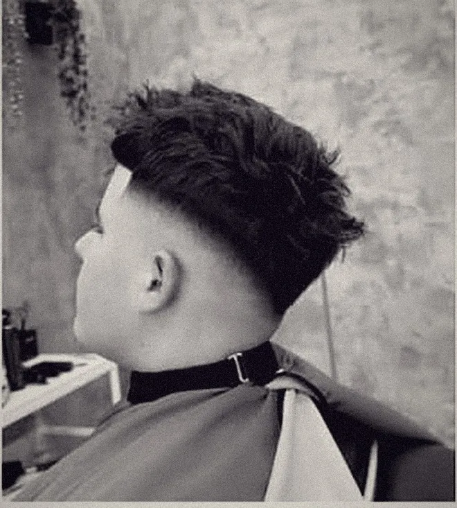
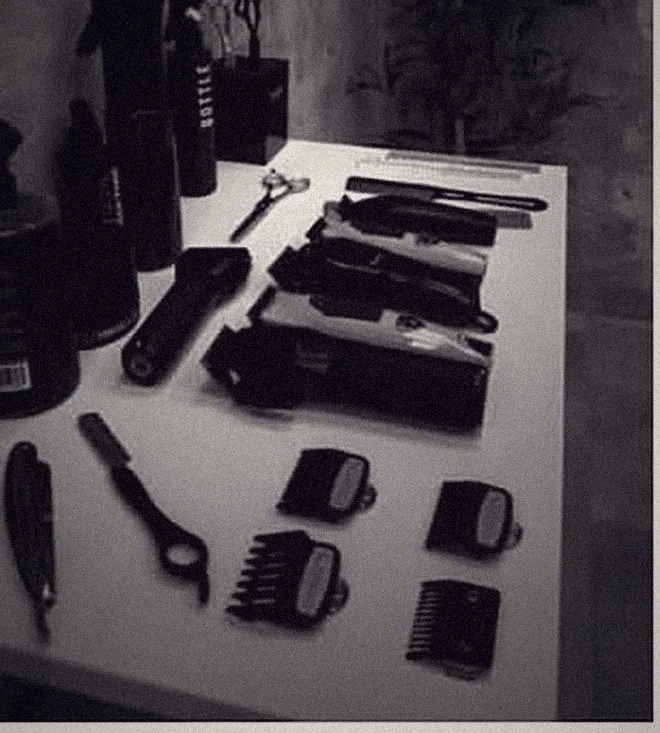
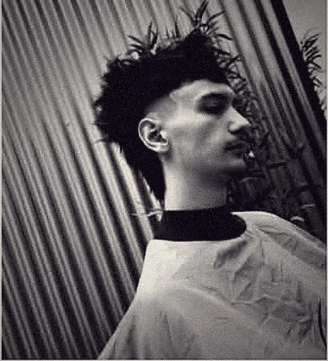
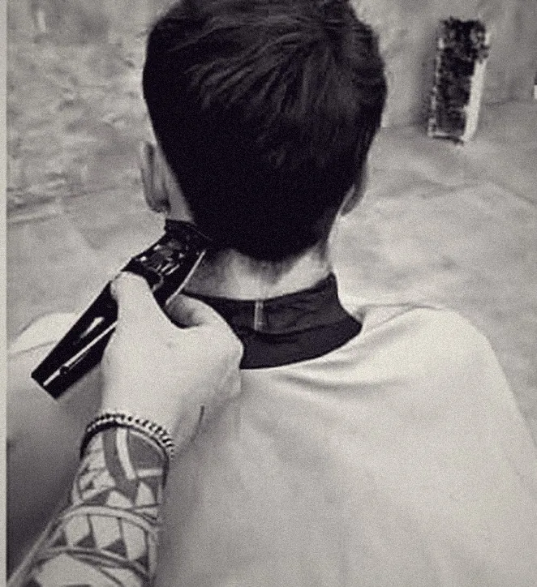
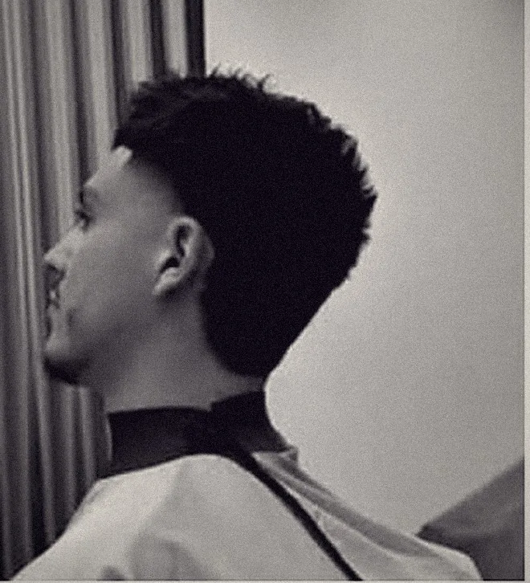
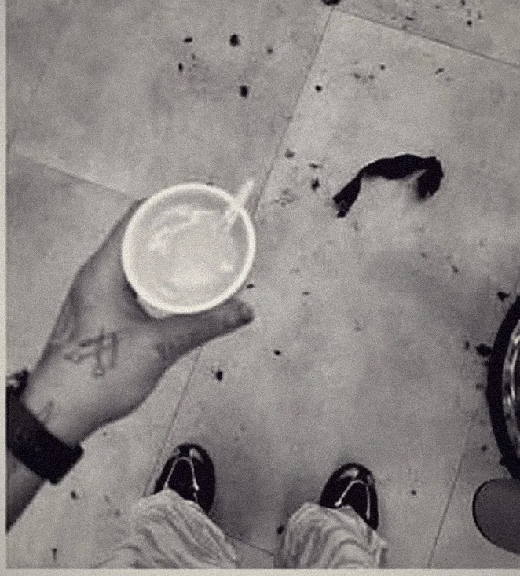
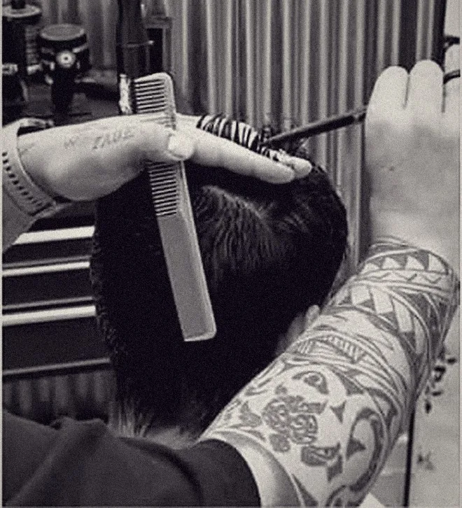
Cuatro sillas.
Un mismo criterio.
Nene y tres barberos más comparten salón, herramientas y la misma manera de entender el oficio.
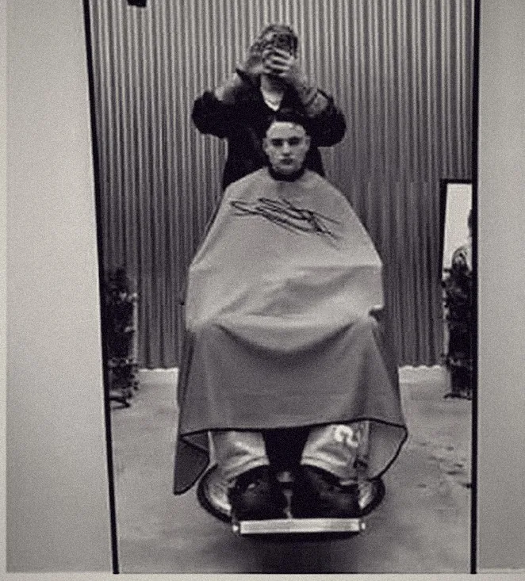
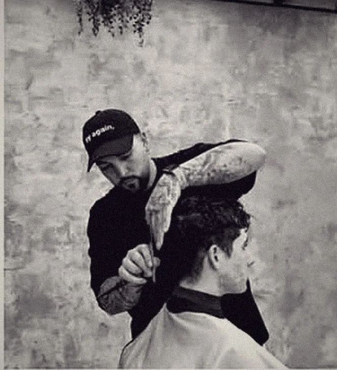
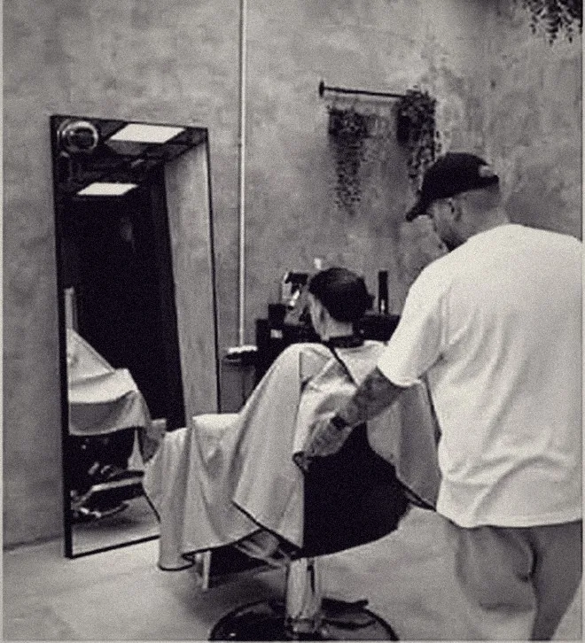
Aquí
ocurre
todo.
Hormigón, chapa metálica, luz baja. Un salón, no una peluquería de barrio.
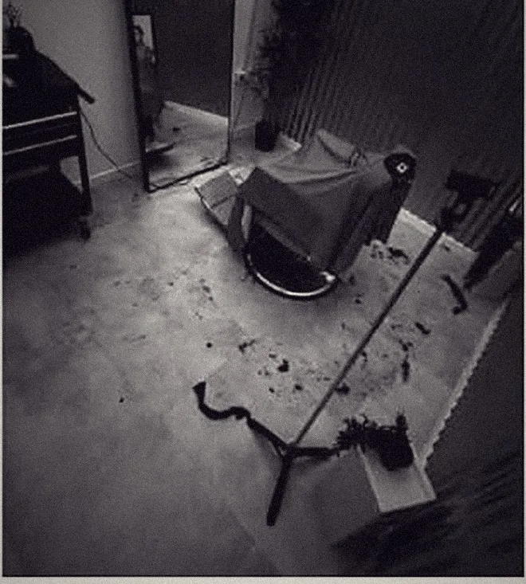
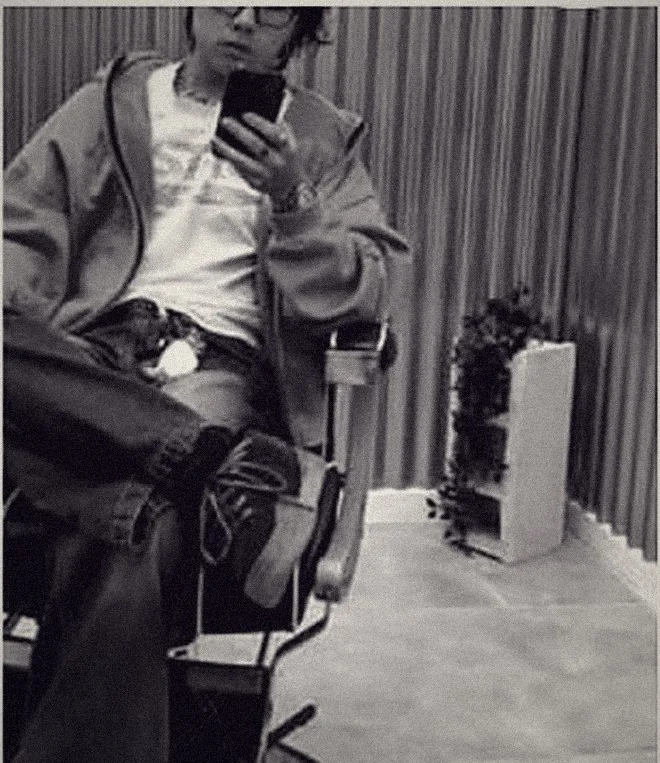
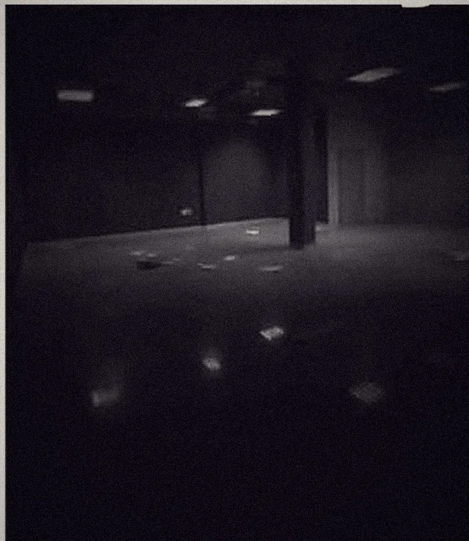
Reconocido entre
profesionales.
He formado parte del jurado en distintos eventos y concursos de barbería. Una forma diferente de vivir el oficio: valorar, aprender y compartir criterio con otros profesionales.
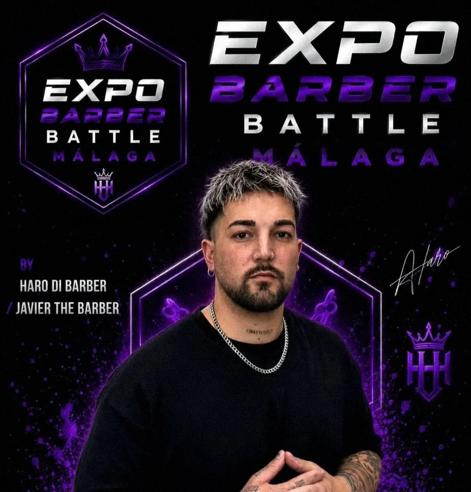
«La presión es un privilegio.
— Nene
No todos tienen la oportunidad
de salir ahí y demostrar
de qué son capaces.»